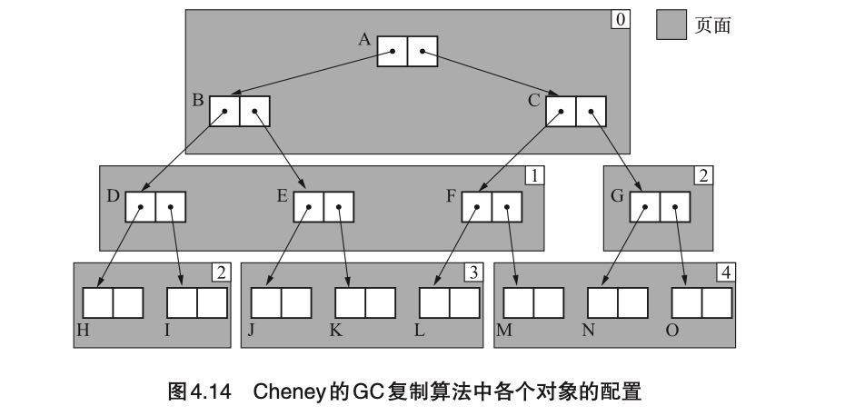
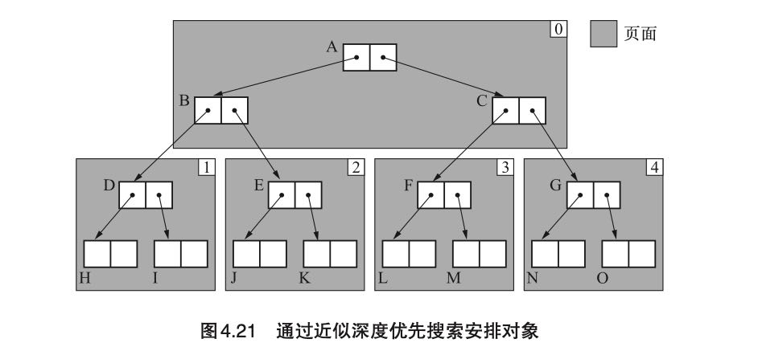
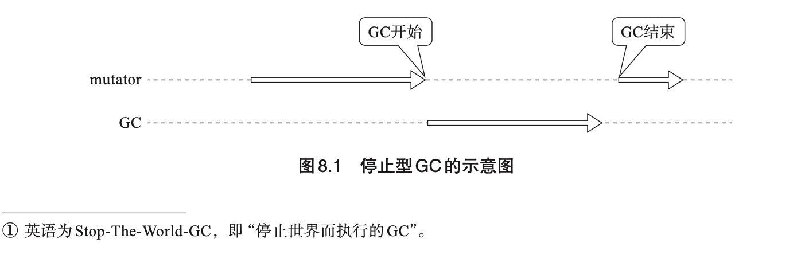
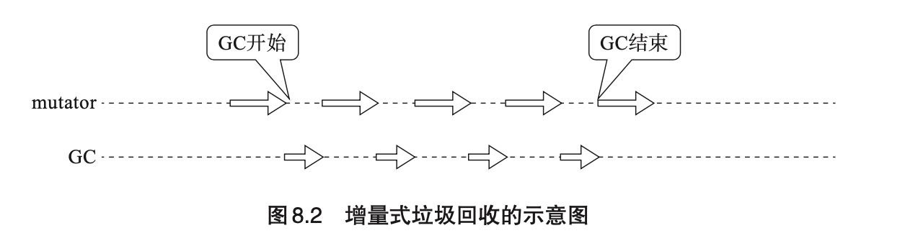

垃圾回收的算法和实现
Table of Contents
https://book.douban.com/subject/26821357/
1. 基础知识
评价 GC 算法的性能时，我们采用以下 4 个标准。
- 吞吐量
- 最大暂停时间
- 堆使用效率（header和堆的使用方法）
- 访问的局部性（相关对象是否放置在一起）
2. GC标记-清除(mark-and-sweep)
Pros/Cons:
- 实现简单
- 与保守GC算法兼容
- 碎片化
- 分配速度（如果使用简单链表就有best-fit和first-fit问题）
- 与COW不兼容（标记字段和实际数据在一起，在Mark阶段会有写入操作，造成Copy）
上面几个问题中，分配速度问题可以使用BiPOP(Big Bag of Pages) 大致思想就是将chunk size进行分组，而COW问题可以使用位图标记方式来解决，这样标记字段和实际数据是分离的。
3. GC引用计数(reference counting)
Pros/Cons:
- 可以立刻回收垃圾
- 最大暂停时间短
- 没有必要沿着指针进行查询
- 与保守GC算法兼容
- 计数器值的增减处理繁重（ 赋值都会存在+1/-1，性能上也会有开销，试想一个赋值就会有GC是什么感觉）
- 计数器会占用很多位
- 实现繁琐复杂，非常容易出错
- 无法解决循环应用问题
在RC上许多小的改进：
- 延迟引用计数，根上rc==0的时候不会立刻进行回收，而是等待其他时机（内存压力大）重新检查根。根上需要维护一个zct(zero count table), 里面是引用计数可能为0的节点。减轻根上rc频繁变化造成的GC，但是rc本身的好处就没有了。本质上类似mark-and-sweep方式。
- sticky引用计数法，减少rc位的大小，基于rc值通常不会太大的假设。比如如果引用计数最多是31的话，那么rc可以使用5bits. 如果存在RC溢出的情况可能会不准确，所以需要使用mark-and-sweep当做backup plan. 实现上需要首先将所有的对象rc设置为0，执行完成mark-and-sweep之后将rc重新设置回来。
- 部分标记-清除算法，用来解决循环引用问题。对象会被标记成为黑(black, 绝对不是垃圾), 白(white, 绝对是垃圾), 灰(gray, 搜索完毕对象), 阴影（hatch, 可能是循环引用的垃圾）。将可能是循环引用的对象放在hatch queue里面，然后定期对hatch queue执行回收)。细想的话这个方法和mark-and-sweep还是有点类似的，但是在mark阶段使用了RC信息。
整体感觉就是，使用RC的好处就是对象可以立刻回收，但是循环引用和overhead让大家还是依赖于mark-and-sweep，但是一旦搞了这个东西RC的好处（立刻回收和最大暂停时间）就没有了。
4. GC复制算法(Copying GC)
Pros/Cons:
- 优秀的吞吐量
- 可以实现高速分配（指针挪动）
- 不会发生碎片化
- 与缓存兼容
- 堆使用效率低下（使用一半内存）
- 不兼容保守式GC算法
- 递归调用函数
Cheney GC(1970). 改进了上面递归调用问题，维护两个指针scan/free. scan表示搜索复制完成的对象指针，而free则是还需要搜索对象指针，最开始都指向堆空间的起始地址start。two-pointer-chasing, 这样维护了一个隐式的队列，将之前的DFS问题变为BFS问题。至于某个对象是否已经copy过去了，可以通过判断是否在[start, scan] range之间。虽然解决了递归调用问题，但是缺点就是相关对象在这次复制中，并没有放置在一起， 造成缓存局部性不好。

近似深度优先搜索方法(1991). 最大的改进是增加了一个$local_scan变量（数组），表示每个page下一次应该搜索的位置，优先搜索当前page下面对应的local_scan指向的对象。过程稍微有点复杂，最终效果是这样的。我的理解是在page内部按照深度搜索策略，而外侧策略还是使用Cheney的方法。

5. GC标记-压缩算法(Mark-and-Compact)
将GC标记清除算法+复制算法相结合的产物。首先介绍的是Knuth研究出来的Lisp2算法，头部需要增加一个forwarding指针用来标记new address. 整个压缩过程分为三步：（需要遍历三次整个堆）
- set forwarding pointer. 设置对象的forwarding指针
- adjust pointer. 递归地检查对象，将对象指针引用设置成为forwarding指针
- move objects. 根据forwarding指针进行移动。
在GC复制算法基础上，Pros/Cons:
- 优秀的吞吐量
- 可以实现高速分配（指针挪动）
- 不会发生碎片化
- 与缓存兼容（如果分配的时候就放置在一起，那么压缩过程也可以保证。正是因为遍历了整个堆，才能保证连续存放）
- 不兼容保守式GC算法
- 压缩过程需要遍历三次堆（不仅仅是活动对象），开销比较大。
几个改进算法有：
- Two Finger. 要求是所有对象大小相同，然后有个free/live指针，free指针放在堆最前面，live在堆最后面。如果发现可以挪动的话，那么live对象就挪动到堆前面，直到free >= live. 好处是不用给对象单独预留forwarding指针，forwarding指针存储在过期的对象里面。整个过程只需要遍历两次堆，但是失去了缓存兼容的效果。
- 表格算法（1967），将每次挪的记录在一个地方，然后在更新指针的时候去那个地方查询“新的指针应该指向什么地方”。不需要维护forwaring指针，遍历两次堆，并且可以保证缓存效果。缺点就是在维护这个记录表格上。
- ImmixGC （2008），没有细看这个算法，主要思想还是将内存分隔成为块(block, 32KB), 块里面有线(line, 128B). 内部会追踪line的使用情况，line因为内存碎片特别大的话那么就会将这个block进行压缩，而其他block还是进行标记和清除。希望我的理解大体正确，这书写的非常详细。
6. 保守式GC(Conservative GC)
对于这类GC前提是我们没有办法正确识别指针和非指针，与之相对的是准确式GC(Exact GC).
不明确的根(ambiguous roots)指的是什么呢?
- 寄存器
- 调用栈
- 全局变量空间
下面是保守式 GC 在检查不明确的根时所进行的基本项目。
- 是不是被正确对齐的值?(在 32 位 CPU 的情况下，为 4 的倍数)
- 是不是指着堆内?
- 是不是指着对象的开头?
对于准确式GC来说，创建正确的根的方法有很多种，不过这些方法有个共通点，就是需要“语言处理程序的 支援”，所以正确的根的创建方法是依赖于语言处理程序的实现的。一种方法是不把寄存器和栈等不明确的根的关键因素当作根，而在处理程序里创建根。具体思路就是创建一个正确的根来管理，这个正确的根在处理程序里只集合了 mutator 可能到达的指针，然后以它为基础来执行 GC。
MostlyCopyingGC(1989) 算法同样我没有细看实现，看上去大体意思就是，对于root来说没有办法挪动位置只使用与保守GC兼容的算法，但是对于引用来说则可以使用其他GC比如compact/copying算法。
7. 分代垃圾回收(Generational GC)
提到了David Ungar实现，分为三代/4个空间：
- 生成空间(new)，快速分配内存。
- 2个相同大小幸存空间(survivor)，之间相互倒腾和压缩内存。
- 老年代(tenure)
对于幸存空间的压缩，除了追踪根之外，还需要追踪老年代对象的指针。为了追踪老年代对象的引用，书里面提到了几种办法，所以这些办法都需要捕捉“老年对象持有新生对象”的事件，这个也称为“写入屏障”（writer barrier）。
- 记录集(record set). 每次老年对象持有新生对象的时候，需要将这个老年对象记录下来。
- 卡片标记，将老年代进行划分(1024字节)成区域，这个区域内的内存赋值在一个bitmap标记上，这样搜索的的时候需要搜索这个bitmap对应的区域。
- 页面标记，类似卡片标记但是依赖于OS标记，就是OS如果写入某个页面的话会有某个特殊标记。
“写入屏障”开销有时候不能忽视：写入屏障导致的额外负担降低了吞吐量。只有当新生代 GC 带来的速度提升效果大于写入屏障对速度造成的影响时，分代垃圾回收才能够更好地发挥作用。当这个大小关系不成立时，分代垃圾回收就没有什么作用，或者说反而可能会起到反作用。这种情况下我们还是使用基本算法更好。
最后面还提到一个列车垃圾回收(Train GC)，有点太细了，主要是为了解决老年代的垃圾回收暂停时间。大致思路好像是，将相互引用的老年代的对象放置在一个个列车里。如果发现列车里面对象没有被root引用的话，那么整个列车对象都可以被回收。
8. 增量式垃圾回收(Incremental GC)
增量式垃圾回收(Incremental GC)是一种通过逐渐推进垃圾回收来控制 mutator 最大暂停时间的方法。虽然可以控制最大暂停时间，但是却会降低内存回收的吞吐。


几个算法都是基于三色标记算法(Tri-color marking, Dijsktra)实现的，而且全部都是基于mark-and-sweep来实现的，可能因为实现上需要将mark阶段切分成为多次完成，如果之间指针发生变化的话会有问题。我觉得仔细想想，应该也可以改变成为mark-and-compact/copying的实现吧。比如mark-compact-sweep, mark-compact作为一个步骤，sweep作为一个单独步骤？
三色标记算法将对象分为三个状态：
- 白色：没有搜索的对象（可以回收）
- 灰色：正在搜索的对象（不确定，中间状态）
- 黑色：搜索完成的对象（不能回收）
增量收集需要写入屏障的支持，如果标记阶段发生指针改变的话，那么可能会出现标记错误。书里面大约有这个几个WB的实现：
- Dijkstra: 赋值的时候将new object也标记上。
- Steele(1975): 没有太看懂，感觉mark阶段有点问题。
- 汤浅（1990）：将old object重新放入search stack中，感觉时间上不一定有保证。
这样看来，它们 3 个各不相同。实际上不仅是写入屏障，在分配等方面也存在着差异， 所以我们没法简单地进行比较。不过即使存在着这么大的差异，各种写入屏障也都能顺畅运行，这一点是比较耐人寻味的。
9. RC Immix 算法
这里面有两个算法，一个是合并型引用计数法(Coalesced Reference Counting， 2001), 一个则是基于它+Immix的算法(2013).
合并型引用计数法的出发点是，对象在相互引用之间RC不断变化，我们不用追踪每次的变化只需要追踪到最后状态就行。这个东西也需要写入屏障的支持，在WB里面里面追踪修改的对象到(modified buffer)里面（需要保存对象原来指向对象的指针），当modified buffer大小超过一定数值之后，对里面的对象计算RC回收。这个算法没有办法解决循环引用的问题，吞吐量也可以增加， 暂停时间则和modified buffer大小相关了。
RC Immix我看的比较粗略，但是RC对象并不是object而是Immix里面的block/line. 吞吐量可以提升不少， 并且因为回收对象粒度更大所以内存使用效率会更高不容易出现碎片。